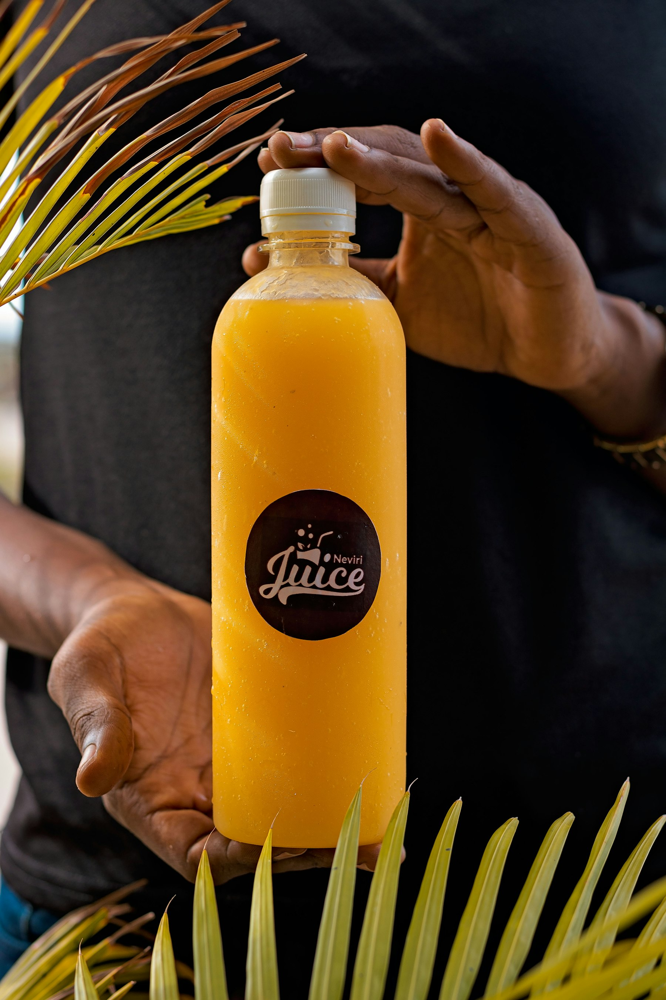
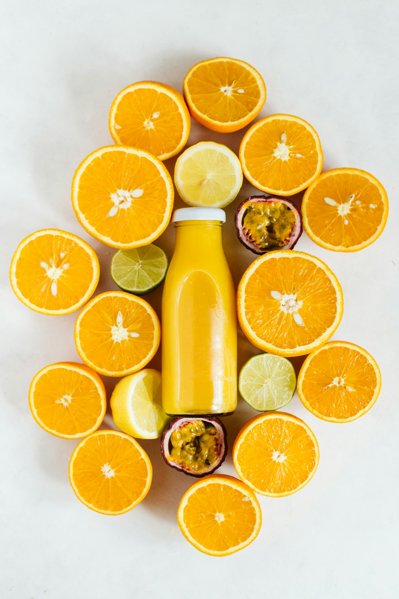
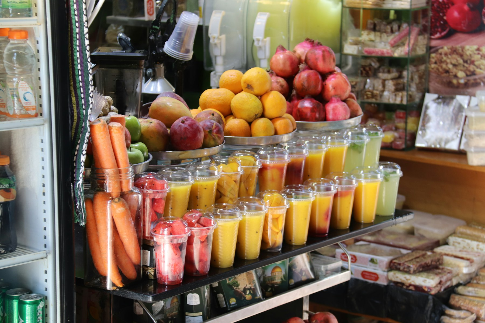
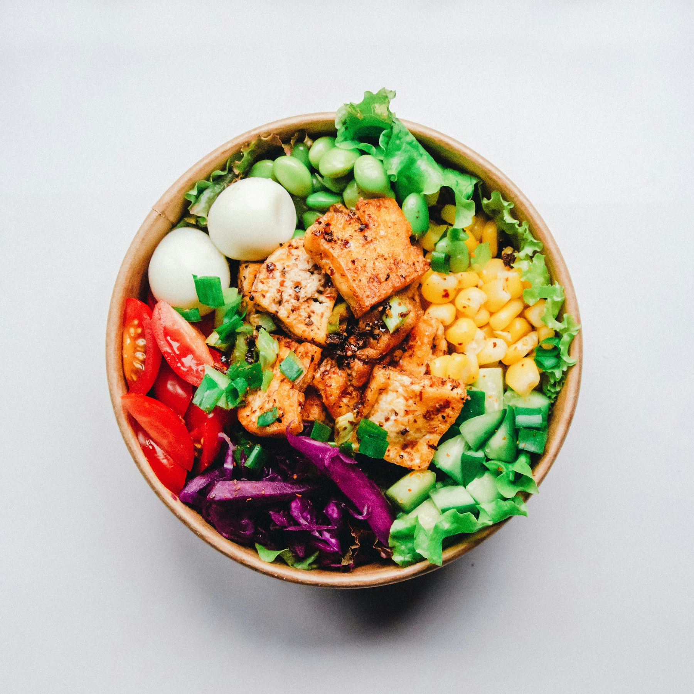
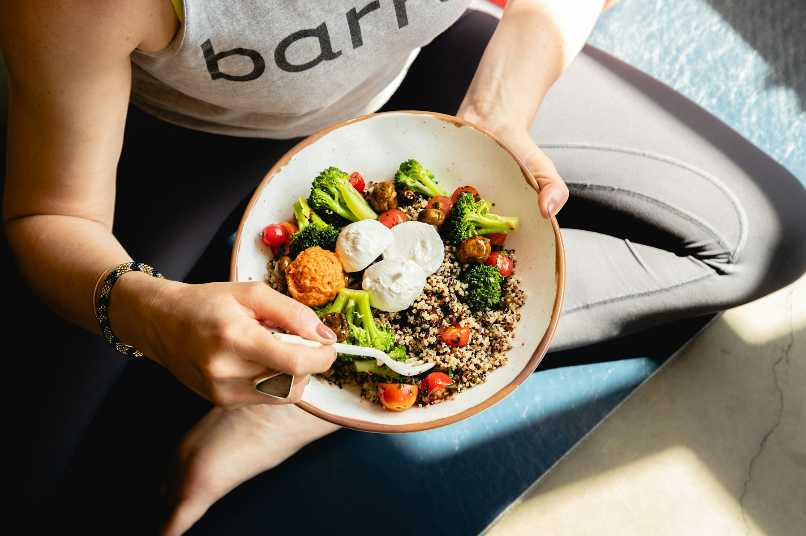

Featured · NutritionHow to build a balanced bowl
Practical advice and ideas from the Crave Bakery team on how to build a balanced bowl.
Read article →

RecipesFive-minute breakfast smoothie bowls
Practical advice and ideas from the Crave Bakery team on five-minute breakfast smoothie bowls.

Farm StoriesMeet the growers behind our greens
Practical advice and ideas from the Crave Bakery team on meet the growers behind our greens.

WellnessWhy cold-pressed juice tastes better
Practical advice and ideas from the Crave Bakery team on why cold-pressed juice tastes better.

RecipesOur favourite summer salad dressings
Practical advice and ideas from the Crave Bakery team on our favourite summer salad dressings.

SustainabilityHow we cut packaging waste by 60%
Practical advice and ideas from the Crave Bakery team on how we cut packaging waste by 60%.
No articles found
Newsletter
Stay in the loop
Weekly menus, new dishes and subscriber-only offers in your inbox.